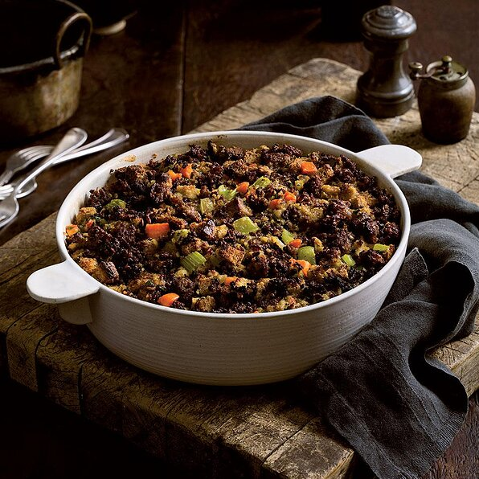

Traditional Sausage Stuffing

Description
Are you missing the perfect side to your Thanksgiving turkey? Well, look
no further. We have you covered. You cannot go wrong with the basic
classics!
This traditional sausage stuffing is surely going to have you stuffed by
the end of your meal. Interesting... Stuffed... Hmmmm, that may be the
reason why they call it stuffing in the first place... Haha, jokes aside,
this is most definitely a dish you want to add to your Thanksgiving dinner
this year.
Ingredients
- 1 (16 ounce) package Johnsonville® Italian All Natural Ground Sausage
- 3 celery ribs, chopped
- 1 large onion, chopped
- 1 cup finely chopped carrots
- 1 (12 ounce) package herb-seasoned stuffing cubes
- 2 cups chicken broth, or more as needed
- 2 eggs, lightly beaten
- ½ cup chopped fresh parsley
Steps
- Preheat oven to 325 degrees F.
- In a large skillet, cook sausage over medium heat for 5 minutes.
- Add celery, onions, and carrots.
- Cook and stir 5 to 10 minutes longer, until sausage is no longer pink and vegetables are tender.
- In a large bowl, combine the sausage mixture and stuffing cubes. Stir in chicken broth, eggs, and parsley; toss to combine.
- Spoon into a greased 9x13-inch baking dish.
- Cover and bake for 30 minutes.
- Uncover and bake 10 minutes longer or until an instant-read thermometer inserted into the center reads 160 degrees F and top is lightly browned.
Nutrition Facts
Per Serving: 304 calories; protein 14g;
carbohydrates 30.5g; fat 12.9g; cholesterol 70.6mg; sodium 1095.3mg.